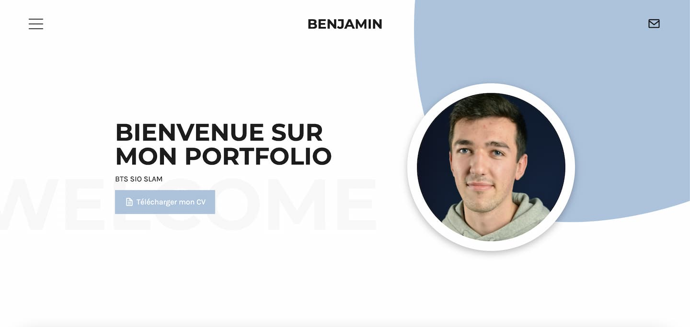
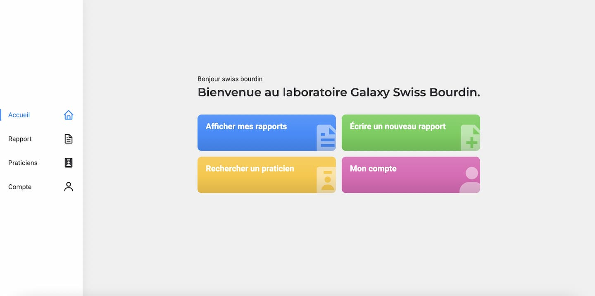
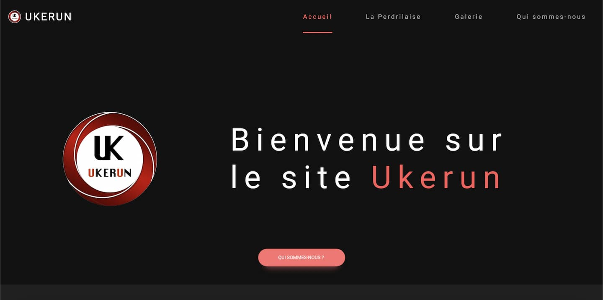

Qu'est-ce que le BTS SIO ?
Le Brevet de Technicien Supérieur Services informatique aux Organisations (SIO) s’adresse à ceux qui souhaitent se former en deux ans aux métiers d’administrateur réseau ou de développeur pour intégrer directement le marché du travail ou continuer des études dans le domaine de l’informatique.
L'élève du BTS SIO option SLAM acquiert les compétences de trois domaines d'activités :
-
Support et mise à disposition de services informatiques : l'élève sera capable de répondre aux attentes des utilisateurs en assurant la disponibilité des services informatiques existants ; il sera aussi en mesure de prendre en compte les besoins informatiques dans l'entreprise et d'accompagner la transformation numérique des services informatiques, tout en maintenant son employabilité. Il acquiert ainsi les compétences pour gérer le patrimoine informatique, répondre aux incidents, développer la présence de l'entreprise sur le Web, organiser son propre développement professionnel.
-
Cybersécurité des services informatiques : l'élève est formé à la cybersécurité et à son intégration dans l'entreprise en tenant compte des dimensions techniques, organisationnelles, juridiques...Il obtient ainsi des compétences sur la protection des données et l'identité numérique de l'entreprise, la sécurisation des équipements et usages des utilisateurs.
-
Conception et développement d'applications : l'élève participera à la conception, au développement, ainsi qu'au déploiement et à la maintenance des composants logiciels d'une solution applicative. Il acquiert ainsi des compétences en conception et développement d'une solution applicative, en maintenance de celle-ci, mais aussi en bases de données et en gestion des données numériques.
Formations
-
2020 - 2022
BTS Services informatiques aux organisations option SLAM
-
Avril 2020
Formation Web Designer (Udemy)
-
2018 - 2020
Baccalauréat sciences et technologies du management et de la gestion (STMG) Option gestion et finance
Stages
-
Janvier - Février 2022
Stage dans l'association Amon pour réaliser un site web.
-
Juillet 2021
Stage dans l'entreprise Soldicom pour découvrir le métier de développeur web.
-
Mai - Juin 2021
Stage dans l'association Ukerun pour réaliser un site web.
Projets
-

La création de mon portfolio a été faite avec HTML, SCSS et JavaScript. Le portfolio est accompagné d'une librairie d'animation.
Portfolio
HTML, CSS, JS
-

Le projet GSB (Galaxy Swiss Bourdin) est un projet réaliser au cours de mon BTS. Le but du projet GSB était de passer une application sous Microsoft Acces en format web. GSB a été réaliser avec l'HTML, le CSS, le JavaScript et Jquery, Laravel et MYSQL.
GSB
HTML, SCSS, JS, LARAVEL, MYSQL
-
AMON E-SPORT
HTML, SCSS, JS, LARAVEL, MYSQL
-
Le projet C-FUN à été réaliser au cours de mon BTS. Le projet avait pour but de faire évoluer une application JAVA. Au début du projet, elle ne possédait qu'un champs de texte. L'application devait avoir certains critère comme avoir une interface graphique avec javafx. Elle devait aussi avoir un générateur de code-barres pour les entrées dans la salle. Il fallait également créer une connexion admin pour pouvoir gérer la salle de sport. L'application à été réaliser avec Maven.
C-FUN
JAVA, MAVEN, MYSQL
-

Ukerun est un site web réaliser durant le stage de première année de mon BTS. Ukerun est une association sportive. Le site web à été réaliser dans le but d'avoir plus de visibilitée sur la web. Le site à été développer avec l'HTML, le CSS, le JavaScript, le PHP et MYSQL.
Ukerun
HTML, CSS, JS, PHP, MYSQL
-
La création de mon portfolio a été faite avec HTML, CSS (SCSS plus précisément) et JavaScript. Le portfolio est accompagné d'une librairie d'animation
Quiz app
HTML, CSS, JS, JSON
Contactez-Moi
Si vous avez des questions, n'hésitez pas et remplissez le formulaire ci-dessous.